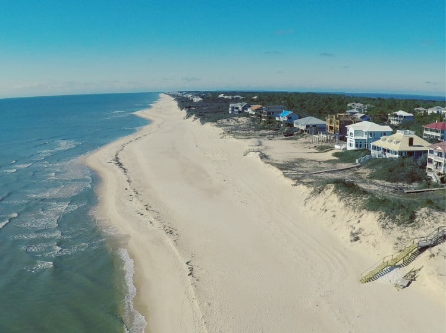
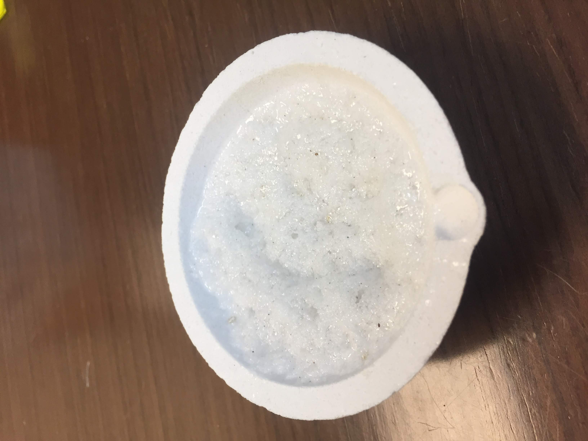
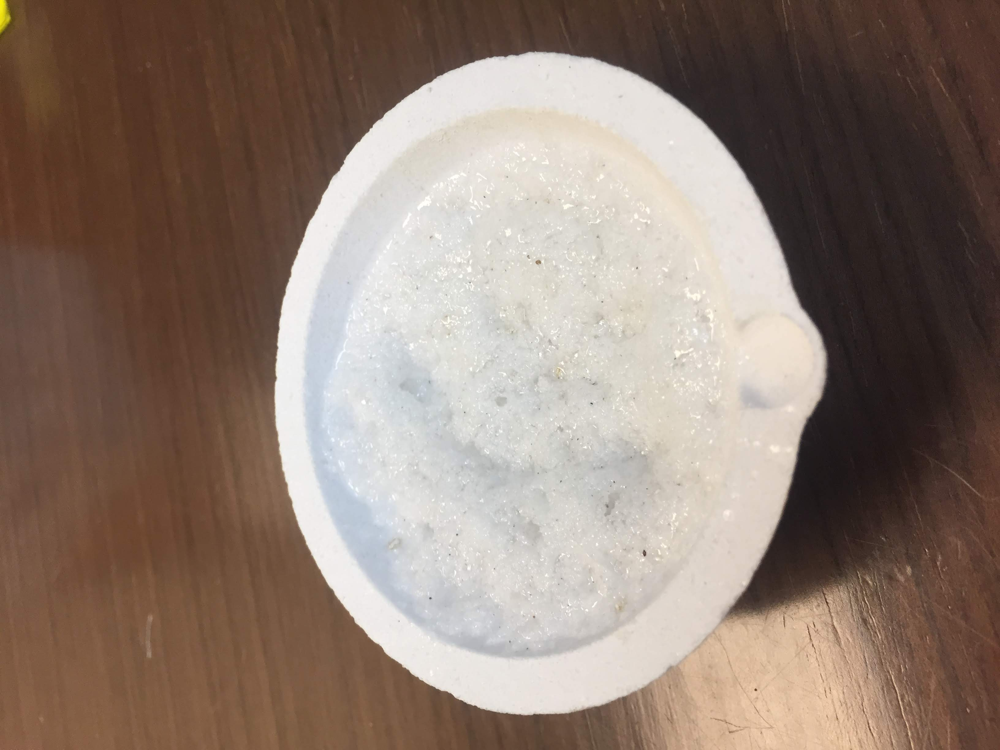
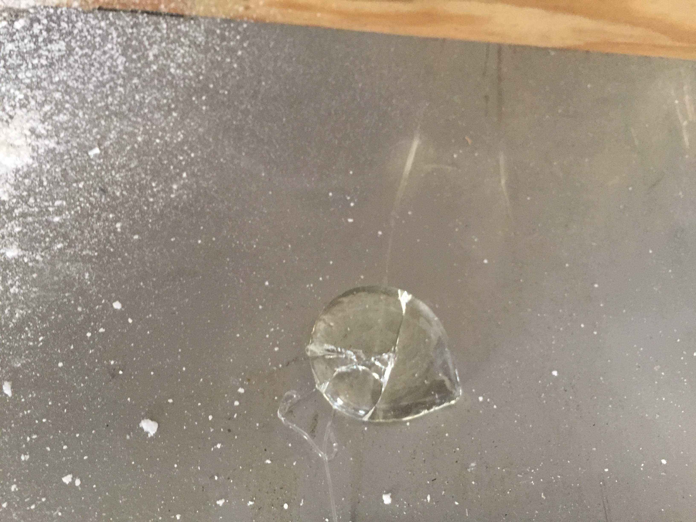
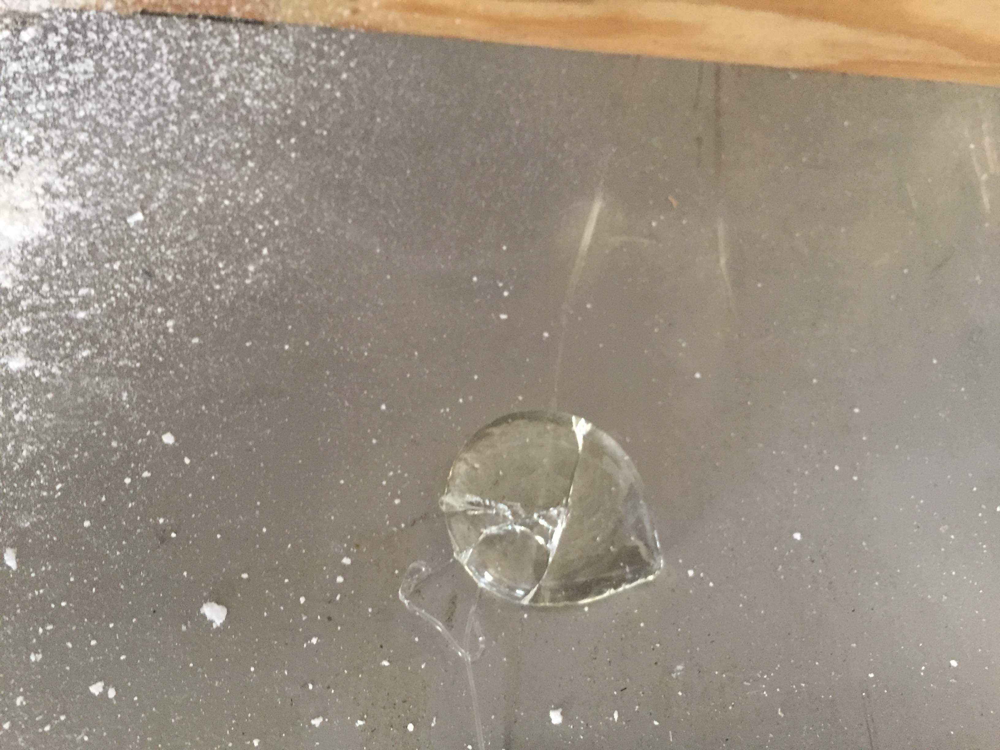

DIY Glass
A short project intended to create glass starting with only sand.
Background
My wife and I fell in love during a trip to St George Island, FL. In an effort to commemorate that trip, I decided to try to make jewelry from the sand at the beach. I discretely gathered some sand from the beach on a later trip. My intent was to make glass with it and then give the glass to jewelry maker to cut the glass into stones similar in appearance to diamonds.
Research & Equipment
A lot of my confidence in attempting this project came from Applied Scince's video on making photochromatic glass. I read some of the references he gave. I opted to use the same kiln to keep things simple, a Paragon Quikfire 6. I did not use as sophsicated of a controller as Applied Science. Instead, I used a simple off the shelf PID temperature controller with a solid state relay on the 120V input line to maintain a stable, set temperature. I used a cheap graphite jewelry ingot casting block and flipped it over to use the flat side to pour the glass. Like Applied Scince, I used alumina silica bowls to mix the ingredients.


Testing
My first set of attempts was to make less modern silica glass. I let it "bake" for hours but could not get pooling to occur. Effecitvely, I glazed the sand and with glass instead of forming a puddle of glass. This was despite running at 1950 def F (1065 deg C), the limit of the kiln. Finally, I took Applied Science's advice from his video and made the more modern borosilica glass which is the same more thermal stress tolerant glass that Pyrex is made from. This glass mixture melts at a substanially lower temperature. I was stunned the first time I removed the top of the kiln and found a bowl with liquid glass in it. It was the classic "I didn't actually think this would work" moment.
 


Results
I made two pieces of glass. The first I allowed some liquid glass to drip onto a piece of stainless steel in the open air shown below. This piece looks amazing optically clear, a testement to the beaches on St George Island. This piece cracked due to the thermal stresses of cooling in open air.
 

The second piece of glass I poured onto the flat piece of graphite. I then placed the hockey puck of liquid glass and the graphite back into the kiln so the glass would have a better chance to anneal. Unfortunately, liquid glass is highly caustic and absorbs materials it is in contact with. My hockey puck of glass absorbed some of the black carbon giving it the dark color shown below.

While my wife loved the thought and effort for her gift, practical woman that she is, she opted not to spend the money to have the glass hockey puck cut into jewelry. I am still happy having made glass from various powders. This also provided me with the excuse I needed to buy kiln, which will likely come in handy on future projects.